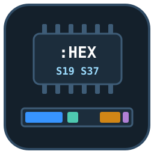
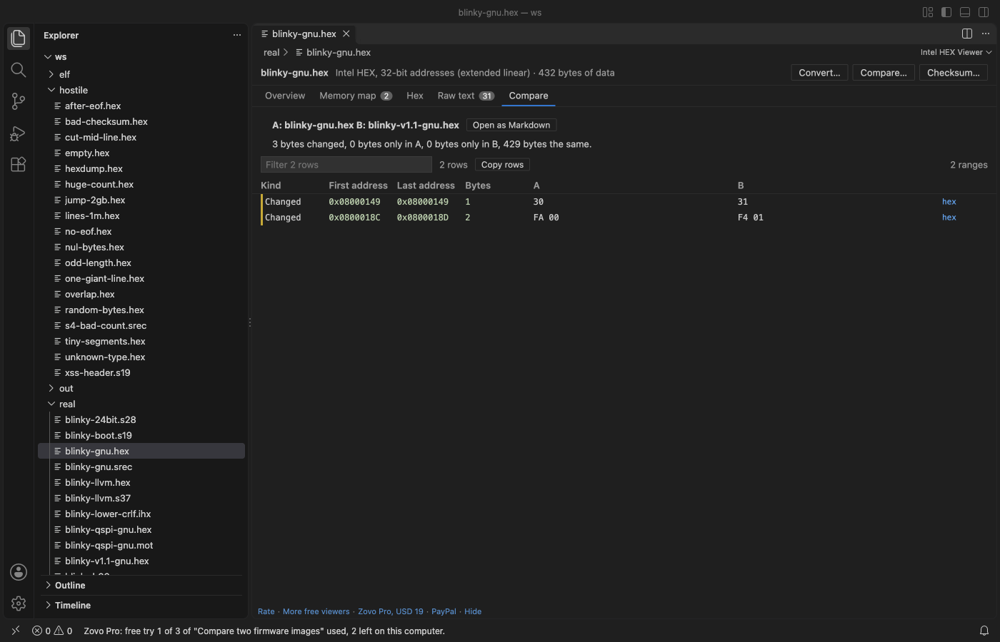

Intel HEX Viewer & S-Record Viewer (HEX, SREC, S19 Firmware Memory Map)
Intel HEX Viewer & S-Record Viewer (HEX, SREC, S19 Firmware Memory Map), a VS Code extension by Zovo
Open an Intel HEX or Motorola S-record firmware image in VS Code and see what it puts where in memory: a memory map of the segments, gaps and overlaps, a hex view by address, a data inspector, and every record checked, with the bad lines listed. For .hex, .ihex, .ihx, .srec, .s19, .s28, .s37 and .mot files. Read-only, no network.
Free, MIT license. Needs VS Code 1.90.0 or newer. Extension ID zovo.zovo-intel-hex-viewer, version 0.1.1.

Questions people ask
Is Intel HEX Viewer & S-Record Viewer (HEX, SREC, S19 Firmware Memory Map) free?
Yes. Intel HEX Viewer & S-Record Viewer (HEX, SREC, S19 Firmware Memory Map) is free and MIT licensed.
How do I install Intel HEX Viewer & S-Record Viewer (HEX, SREC, S19 Firmware Memory Map)?
Click "Install in VS Code" above, or search for zovo.zovo-intel-hex-viewer in the Extensions view.
What you see
| Tab | What it shows |
|---|---|
| Overview | Format and address size, address range, data size, segments and gaps, start address, S0 header text, record counts, checksum result, end-of-file record, line endings |
| Memory map | Each block of data with its first and last address, size, the gap before it and the lines it comes from; a bar that places the blocks by address; overlapping records marked |
| Problems | Every line with a wrong checksum, a wrong byte count, a bad hex digit, an unknown record type or a wrong S5/S6 count, with its line number. A click shows the line |
| Hex | Memory by address, 16 bytes a row, with gaps left empty. Go to an address, step from segment to segment, click a byte to read it in the data inspector (u8 to u64, i8 to i64, float, double, little or big endian) |
| Raw text | The file itself with line numbers; problem lines are marked |
- Intel HEX: record types 00 to 05, 16-bit, 20-bit (extended segment, 02) and 32-bit (extended linear, 04) addresses, start address records 03 (CS:IP) and 05 (EIP).
- Motorola S-record: S0 header text, S1, S2 and S3 data, S5 and S6 record counts, S7, S8 and S9 start addresses.
- Lowercase digits, CRLF or LF line ends, blank lines and a missing end record are all read. Lines after the end record are reported, not read.
- A file that jumps 2 GB between two records costs only the bytes it holds: gaps are never filled in memory.
- Files of a million lines open in about a second.

Open a file
.srec,.s19,.s28,.s37,.mot,.ihex,.ihx,.h86and.mcsfiles open in the viewer when you click them..hexfiles open as text, because many.hexfiles hold other things. When a text editor shows Intel HEX or S-records, a board icon appears in the editor title: click it to open the file in the viewer. Or right-click the file in the Explorer and pick Open in Intel HEX Viewer.- Command Palette: Intel HEX Viewer: Open in Intel HEX Viewer.
Free and Pro
Everything above is free, with no limit and no sign-in. Three Zovo Pro tools save time on bigger jobs. Each has 3 free tries on your computer, and a try counts only when the tool gives you a result.
| Tool | Free | Zovo Pro |
|---|---|---|
| Memory map, problems, hex view by address, data inspector, raw text, filter and copy | yes | yes |
| Convert: save as Intel HEX, S19, S28 or S37, or a flat binary with the gaps filled; pick the address range and the record size | 3 tries | yes |
| Compare two images by address: changed byte ranges, data only in one of them, a Markdown report | 3 tries | yes |
| Checksum or CRC over an address range (CRC-32, CRC-32/MPEG-2, CRC-16/CCITT-FALSE, XMODEM, MODBUS, 8 and 16-bit sums, MD5, SHA-256), and a copy of the file with the value written at an address | 3 tries | yes |
Zovo Pro is USD 19 once and turns on the Pro tools in every Zovo extension. Nothing about Pro shows when you open a file; it only comes up when you click one of the three tools. To hide the buttons, set intelHex.showProTools to false.

Safe with any file
- The file is read in a separate worker thread with a time and memory limit. A broken or hostile file gives a message and the part that could be read; it cannot freeze VS Code.
- Lines, problems, data size and reading time all have limits, and the viewer says when one was reached.
- Read-only: the extension never changes the file you opened. Convert and Checksum write new files only where you pick.
- No network and no telemetry.
Commands
| Command | What it does |
|---|---|
| Intel HEX Viewer: Open in Intel HEX Viewer | Open a file (also in the Explorer right-click menu and the editor title) |
| Intel HEX Viewer: Open a sample Intel HEX file | A small sample to try the viewer |
| Intel HEX Viewer: Convert to Intel HEX, S-record or binary (Pro) | Save the image in another format |
| Intel HEX Viewer: Compare two firmware images (Pro) | What changed between two builds |
| Intel HEX Viewer: Checksum or CRC over an address range (Pro) | Compute a value and write it into a copy |
Settings
| Setting | Default | |
|---|---|---|
intelHex.showProTools | true | Show the Convert, Compare and Checksum buttons |
intelHex.showSupportLinks | true | Show the small links at the bottom of the viewer |
intelHex.askForRating | true | Ask once, after a few days, whether you want to rate it |
Limits
- Plain
.binfiles are not read here. Hex Viewer opens them. - Text files up to 256 MB (about 6 million lines). The Problems tab keeps the first 10,000 problems and counts the rest.
- No disassembly and no editing in place.
- The viewer checked its reader and converter against GNU objcopy and llvm-objcopy on real firmware images.
Works in VS Code 1.90 and later, Cursor, Windsurf and VSCodium.
Guides
- See what an Intel HEX or S19 file puts in memory
- Compare two .hex or .s19 firmware images by address
- Find checksum errors and bad records in an Intel HEX file
- Intel HEX Viewer Online, free in your browser with no upload
Install Intel HEX Viewer & S-Record Viewer (HEX, SREC, S19 Firmware Memory Map)
Click the button to open VS Code and install it, or press Ctrl+P (Cmd+P on macOS) in VS Code and run ext install zovo.zovo-intel-hex-viewer.
Free, MIT license. Needs VS Code 1.90.0 or newer. Extension ID zovo.zovo-intel-hex-viewer, version 0.1.1.
Source code and issues are on GitHub.
Zovo Pro and support
Zovo Pro: USD 19 once, every Zovo viewer. It turns on the Pro tools in this extension and in the other Zovo extensions you use. The free features stay free.
After a card payment your license key shows on the next page. Paste it with the command "Zovo Pro: Enter a key".
You can also support the work with no Pro:
Need your format supported?
Open a format request with a sample file, and I reply there whether it can be done. For USD 299 once, through this GitHub Sponsors tier, I add your file format or a missing feature to this extension, with tests, within 7 days.